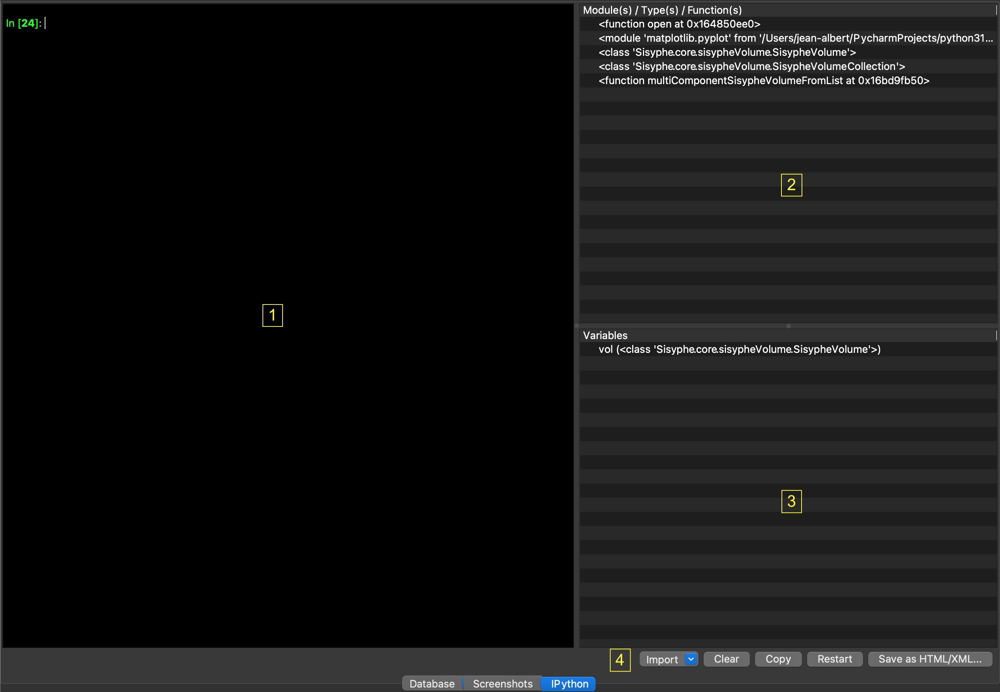

IPython console
A fully functional IPython console (Jupyter 5.4.0) is available in the “IPython” tab of the central area (see IPython documentation).
Command line on the left (1). Right-click displays a pop-up menu:
Cut, cut selected text.
Copy, copy selected text to the clipboard.
Paste, paste clipboard text to the console.
Select all, select all of the console text.
Save as HTML/XML, save the console display to HTML/XML file.
Print, open a print dialog to print the console display.
Modules/Types/Functions imported into the environment are displayed in the list box at top-right (2). A tooltip pops when mouse cursor remains in front of a box element. It displays its docstring.
Variables are displayed in the list box at bottom-right (3). A tooltip pops when mouse cursor remains in front of a variable. It displays its value converted to string. Double-click on a SisypheVolume, sitkImage (see SimpleITK Image class), ANTsImage (see ANTs Image class), vtkImageData (see VTK Image class) or ndarray variable (see Numpy ndarray class) opens it in the thumbnail bar.
Five buttons (4):
Import, import of most-used modules (PySisyphe core modules, ANTs, Matplotlib, NiBabel, Nilearn, Numpy, Pandas, Pillow, PyDicom, Scikit-image, SciPy, SimpleITK)
Clear, clear console.
Restart, restart console.
Save HTML/XML, save the console display to HTML/XML file.
Same functions (1, 2, 3 and 4) are accessible via the menu bar (Views -> IPython)..
Most popular commands
Up/Down keys to get command history. Tab key (->|) after a dot to display a pop-up window of available methods.
- ?
IPython help.
- <object>?
Returns <object> docstring
- %cd
Change the current working directory. %cd <dir> changes to directory <dir> %cd .. changes to previous directory %cd - changes to last visited directory.
- %colors <scheme>
Switch color scheme for prompts, info system and exception handlers. Currently implemented schemes: nocolor, linux, lightbg.
%config <class>[.<field>=<value>] %config with no argument to see what <classes> are available. %config <class>, to view <fields> for a given class. %config <class>.<field> = <value>, setting <value> to <field>.<class>.
- %env <var> [<value>]
Get, set, or list environment variables. %env with no argument, lists all environment variables/values. %env <var> get value for environment variable <var>. %env <var> <value> set <value> for <var>.
%ls
- %notebook <filename>
Export and convert IPython notebooks.
- %pip
Run the pip package manager within the current kernel. %pip install <package>
- %pwd
Return the current working directory path.
- %run <filename.py>
Run the named file <filename.py> inside IPython as a program.
- %time <python expression>
Time execution of a Python statement or expression.
- %who
Print all interactive variables, with some minimal formatting.
- %whos
Like %who, but gives some extra information about each variable.